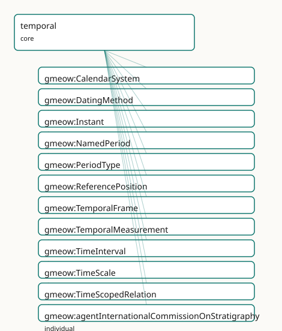

GMEOW Temporal — intervals, instants, temporal frames, time-scoped relations
- IRI: https://blackcatinformatics.ca/gmeow/slices/temporal
- Tier: core
Group: core
What This Slice Covers
This slice owns 113 terms and contributes 92 mapping or projection rows. Use it when its terms match the native fact you want to preserve; use the linkage tables to see how those facts leave GMEOW for consumer vocabularies.
Dependencies
Consumers
- Every slice carrying time-scoped facts (tenures, residences, validity); the statement layer's
validFrom/validUntil; the calendar slice; the mail corpus.
Local Map

Examples
Intervals And Frames
- Source:
slices/core/temporal/examples/intervals-and-frames.ttl - GMEOW terms:
gmeow:Instant,gmeow:TimeInterval,gmeow:hasEndInstant,gmeow:hasStartInstant,gmeow:hasTemporalFrame,gmeow:inTemporalFrame,gmeow:instantValue,gmeow:intervalMeets,gmeow:temporalFrameUTCGregorian,gmeow:temporalFrameUTCHebrew - External prefixes:
xsd
# SPDX-FileCopyrightText: 2026 Blackcat Informatics® Inc. <paudley@blackcatinformatics.ca>
# SPDX-License-Identifier: CC-BY-4.0
#
# Worked example: time under explicit frames . Every crisp Instant is
# asserted relative to a TemporalFrame (Principle 11) — a bare "10:00:00Z" is
# ill-formed without saying which time scale and calendar interpret it. Two
# intervals (a conference talk and its Q&A) are built from begin/end Instants and
# related by an Allen relation (the talk is intervalBefore the Q&A). A third
# instant, the same wall-clock moment expressed in the Hebrew-calendar civil
# frame, shows that the frame — not the literal — carries the calendar.
@prefix gmeow: <https://blackcatinformatics.ca/gmeow/> .
@prefix ex: <https://blackcatinformatics.ca/gmeow/examples/temporal/> .
@prefix xsd: <http://www.w3.org/2001/XMLSchema#> .
# --- The talk interval: begin and end Instants, each in the UTC/Gregorian frame.
ex:talkStart a gmeow:Instant ;
gmeow:instantValue "2026-09-14T13:00:00Z"^^xsd:dateTime ;
gmeow:inTemporalFrame gmeow:temporalFrameUTCGregorian .
ex:talkEnd a gmeow:Instant ;
gmeow:instantValue "2026-09-14T13:45:00Z"^^xsd:dateTime ;
gmeow:inTemporalFrame gmeow:temporalFrameUTCGregorian .
ex:talkInterval a gmeow:TimeInterval ;
gmeow:hasStartInstant ex:talkStart ;
gmeow:hasEndInstant ex:talkEnd ;
gmeow:hasTemporalFrame gmeow:temporalFrameUTCGregorian .
# --- The Q&A interval, immediately after.
ex:qaStart a gmeow:Instant ;
gmeow:instantValue "2026-09-14T13:45:00Z"^^xsd:dateTime ;
gmeow:inTemporalFrame gmeow:temporalFrameUTCGregorian .
ex:qaEnd a gmeow:Instant ;
gmeow:instantValue "2026-09-14T14:00:00Z"^^xsd:dateTime ;
gmeow:inTemporalFrame gmeow:temporalFrameUTCGregorian .
ex:qaInterval a gmeow:TimeInterval ;
gmeow:hasStartInstant ex:qaStart ;
gmeow:hasEndInstant ex:qaEnd ;
gmeow:hasTemporalFrame gmeow:temporalFrameUTCGregorian .
# --- Allen relation: the talk's end instant is exactly the Q&A's start instant
# (13:45:00Z), so they MEET — adjacency, not Allen "before" (which would need
# a gap between them).
ex:talkInterval gmeow:intervalMeets ex:qaInterval .
# --- The SAME wall-clock moment as the talk's start, but read in the Hebrew
# civil-time frame: identical instant value, different interpreting frame —
# the frame, not the literal, names the calendar (P11).
ex:talkStartHebrew a gmeow:Instant ;
gmeow:instantValue "2026-09-14T13:00:00Z"^^xsd:dateTime ;
gmeow:inTemporalFrame gmeow:temporalFrameUTCHebrew .
Terms
Classes
| Term | Label | Definition |
|---|---|---|
gmeow:CalendarSystem |
Calendar System | The rules mapping a time scale to human-readable dates. Co-equal: Gregorian is one peer among Julian, Hebrew, Islamic, Chinese, Persian, Ethiopian, Coptic, ISO... |
gmeow:DatingMethod |
Dating Method | The method used to derive a temporal measurement — radiocarbon, dendrochronology, thermoluminescence, etc. A value, never a subclass. Specialises gmeow:Observa... |
gmeow:Instant |
Instant | A zero-duration point in time, distinct from a TimeInterval. Carries a crisp instantValue (xsd:dateTime) and/or an edtfValue (EDTF literal) relative to a Tempo... |
gmeow:NamedPeriod |
Named Period | A named stretch of time with defined bounds — a geologic era, historical dynasty, artistic period, fiscal year, or any other culturally salient temporal divisi... |
gmeow:PeriodType |
Period Type | The kind of a named period (geologic eon, era, period, epoch, age; historical dynasty, era; fiscal year). A value, never a subclass. |
gmeow:ReferencePosition |
Reference Position | The spatial locus, observatory, timezone, or planetary body relative to which a time is expressed — e.g. an observatory longitude for local sidereal time, an I... |
gmeow:TemporalFrame |
Temporal Frame | A reference system for expressing time — the temporal counterpart of gmeow:ReferenceFrame. Decomposed into a TimeScale, an optional CalendarSystem, and an opti... |
gmeow:TemporalMeasurement |
Temporal Measurement | A measured assignment of a date or age to an entity or sample, carrying the method, uncertainty, and determinacy. Now a subclass of gmeow:Measurement (and ther... |
gmeow:TimeInterval |
Time Interval | A bounded stretch of time, optionally open-ended, delimited by a start and/or end instant. |
gmeow:TimeScale |
Time Scale | The atomic progression of time — TAI, TT, UTC, GPS, UT1, TDB, etc. A time scale is independent of any calendar or geographic reference position. |
gmeow:TimeScopedRelation |
Time-Scoped Relation | A reified relationship that holds only over a particular time interval — the base for residence, tenure, and membership-over-time situations. |
Properties
| Term | Label | Definition |
|---|---|---|
gmeow:assertedAt |
asserted at | The instant an agent observed or asserted the annotated claim (e.g. an email Date header or a vCard REV) — a witness that the fact held at that instant. Distin... |
gmeow:atTime |
at time | The instant at which a point-like event or observation occurred. |
gmeow:duringInterval |
during interval | Relates a time-scoped relation to the interval over which it holds. |
gmeow:edtfValue |
EDTF value | An ISO 8601-2 (EDTF) expression of an instant or interval, stored as a plain literal. EDTF parsing and normalization are solver-layer concerns (Principle 12). |
gmeow:endedAtTime |
ended at time | The instant at which a time interval ends; absent if the interval is still open. |
gmeow:frameCalendarSystem |
frame calendar system | The calendar system of a temporal frame, when one is used. Optional: some frames (e.g. Julian Date) carry only a scale. |
gmeow:frameReferencePosition |
frame reference position | The reference position of a temporal frame, when one is needed. Optional: TAI needs none; civil time needs a timezone. |
gmeow:frameTimeScale |
frame time scale | The time scale of a temporal frame (functional: a frame has exactly one scale). |
gmeow:hasEndInstant |
has end instant | The end instant of a time interval; absent if the interval is open-ended. |
gmeow:hasStartInstant |
has start instant | The start instant of a time interval. |
gmeow:hasTemporalFrame |
has temporal frame | Relates a time interval to the temporal frame in which its bounds are expressed. |
gmeow:hasTemporalMeasurement |
has temporal measurement | Relates an entity (event, artifact, place, sample) to a temporal measurement assigned to it. |
gmeow:inTemporalFrame |
in temporal frame | Relates an instant to the temporal frame in which its value is expressed. |
gmeow:instantValue |
instant value | The crisp instant as an xsd:dateTime literal in the associated temporal frame. |
gmeow:intervalAfter |
interval after | Allen AFTER: this interval begins strictly after the related interval ends. Transitive inverse of gmeow:intervalBefore. (= time:intervalAfter) |
gmeow:intervalBefore |
interval before | Allen BEFORE: this interval ends strictly before the related interval begins. Transitive. Inverse of gmeow:intervalAfter. (= time:intervalBefore) |
gmeow:intervalCoincidesWith |
interval coincides with | Allen EQUALS: this interval and the related interval share the same temporal extent. Symmetric and transitive. TEMPORAL simultaneity only, never identity of th... |
gmeow:intervalContains |
interval contains | Allen CONTAINS: this interval's extent strictly contains the related interval's extent. Transitive inverse of gmeow:intervalDuring. (= time:intervalContains) |
gmeow:intervalDuring |
interval during | Allen DURING: this interval's extent falls strictly within the related interval's extent. Transitive. Inverse of gmeow:intervalContains. (= time:intervalDuring) |
gmeow:intervalFinishedBy |
interval finished by | Allen FINISHED-BY: inverse of gmeow:intervalFinishes. (= time:intervalFinishedBy) |
gmeow:intervalFinishes |
interval finishes | Allen FINISHES: this interval and the related interval end together, and this one began later. NOT transitive. Inverse of gmeow:intervalFinishedBy. (= time:int... |
gmeow:intervalMeets |
interval meets | Allen MEETS: this interval ends exactly when the related interval begins. NOT transitive. Inverse of gmeow:intervalMetBy. (= time:intervalMeets) |
gmeow:intervalMetBy |
interval met by | Allen MET-BY: inverse of gmeow:intervalMeets. (= time:intervalMetBy) |
gmeow:intervalOverlappedBy |
interval overlapped by | Allen OVERLAPPED-BY: inverse of gmeow:intervalOverlaps. (= time:intervalOverlappedBy) |
gmeow:intervalOverlaps |
interval overlaps | Allen OVERLAPS: this interval begins before and ends during the related interval. NOT transitive. Inverse of gmeow:intervalOverlappedBy. (= time:intervalOverla... |
gmeow:intervalStartedBy |
interval started by | Allen STARTED-BY: inverse of gmeow:intervalStarts. (= time:intervalStartedBy) |
gmeow:intervalStarts |
interval starts | Allen STARTS: this interval and the related interval begin together, and this one ends first. NOT transitive. Inverse of gmeow:intervalStartedBy. (= time:inter... |
gmeow:measuredAge |
measured age | The numeric age yielded by a temporal measurement, in the unit given by gmeow:hasUnit. |
gmeow:measuredDate |
measured date | The absolute date instant yielded by a temporal measurement. Semantically plays the observationResult role for TemporalMeasurement, but is NOT asserted as rdfs... |
gmeow:measurementDeterminacy |
measurement determinacy | The ontic determinacy model of a temporal measurement — crisp, vague, fuzzy, probabilistic, or disputed. Bridges to gmeow:hasDeterminacy (rdfs:subPropertyOf) s... |
gmeow:measurementMethod |
measurement method | The dating method used for a temporal measurement. Bridges to gmeow:observationMethod (rdfs:subPropertyOf) so generic consumers can query all observations by m... |
gmeow:measurementUncertainty |
measurement uncertainty | The uncertainty (e.g. ±1 sigma) of a temporal measurement, in the same unit as the measured age. |
gmeow:periodContainsPeriod |
period contains period | The transitive inverse of gmeow:periodPartOf. |
gmeow:periodEnd |
period end | The instant at which a named period ends. |
gmeow:periodPartOf |
period part of | Relates a named period to a larger named period that contains it (e.g. Holocene ⊂ Quaternary ⊂ Cenozoic). Transitive. |
gmeow:periodStart |
period start | The instant at which a named period begins. Functional nature removed because the property chain below makes periodStart non-simple, and OWL 2 DL forbids non-s... |
gmeow:periodType |
period type | The kind(s) of a named period. Non-functional: competing classifications coexist. |
gmeow:recordedNoLaterThan |
recorded no later than | A DERIVED upper bound (terminus ante quem) on when the annotated claim was committed to a record — typically taken from the modification time of its source car... |
gmeow:startedAtTime |
started at time | The instant at which a time interval begins. |
gmeow:validFrom |
valid from | The instant from which the annotated statement is asserted to hold. |
gmeow:validUntil |
valid until | The instant until which the annotated statement is asserted to hold. |
Individuals
| Term | Label | Definition |
|---|---|---|
gmeow:agentInternationalCommissionOnStratigraphy |
International Commission on Stratigraphy | The International Commission on Stratigraphy (ICS), the global scientific authority for definition and nomenclature of geologic time units. |
gmeow:calendarChinese |
Chinese calendar | The lunisolar Chinese calendar. |
gmeow:calendarCoptic |
Coptic calendar | The Coptic calendar. |
gmeow:calendarEthiopian |
Ethiopian calendar | The Ethiopian calendar, similar to the Coptic. |
gmeow:calendarGregorian |
Gregorian calendar | The Gregorian calendar, introduced 1582. |
gmeow:calendarHebrew |
Hebrew calendar | The lunisolar Hebrew calendar. |
gmeow:calendarISOWeek |
ISO week date | The ISO 8601 week-numbering calendar. |
gmeow:calendarIslamic |
Islamic (Hijri) calendar | The lunar Islamic calendar. |
gmeow:calendarJulian |
Julian calendar | The Julian calendar, predecessor to the Gregorian. |
gmeow:calendarPersian |
Persian (Solar Hijri) calendar | The solar Persian calendar. |
gmeow:datingMethodAminoAcidRacemization |
amino acid racemization | The amino acid racemization dating method — a scientific technique used to estimate the age of an object, stratum, or event. |
gmeow:datingMethodDendrochronology |
dendrochronology | The dendrochronology dating method — a scientific technique used to estimate the age of an object, stratum, or event. |
gmeow:datingMethodElectronSpinResonance |
electron spin resonance (ESR) | The electron spin resonance dating method — a scientific technique used to estimate the age of an object, stratum, or event. |
gmeow:datingMethodOpticallyStimulatedLuminescence |
optically stimulated luminescence (OSL) | The optically stimulated luminescence dating method — a scientific technique used to estimate the age of an object, stratum, or event. |
gmeow:datingMethodPaleomagnetism |
paleomagnetism | The paleomagnetism dating method — a scientific technique used to estimate the age of an object, stratum, or event. |
gmeow:datingMethodPotassiumArgon |
potassium-argon (K-Ar) | The potassium argon dating method — a scientific technique used to estimate the age of an object, stratum, or event. |
gmeow:datingMethodRadiocarbon |
radiocarbon dating (14C) | The radiocarbon dating method — a scientific technique used to estimate the age of an object, stratum, or event. |
gmeow:datingMethodStratigraphicCorrelation |
stratigraphic correlation | The stratigraphic correlation dating method — a scientific technique used to estimate the age of an object, stratum, or event. |
gmeow:datingMethodThermoluminescence |
thermoluminescence | The thermoluminescence dating method — a scientific technique used to estimate the age of an object, stratum, or event. |
gmeow:datingMethodUraniumLead |
uranium-lead (U-Pb) | The uranium lead dating method — a scientific technique used to estimate the age of an object, stratum, or event. |
gmeow:granularityCentury |
century level | The century granularity level — a resolution at which a value may be disclosed or coarsened (Principle 10). |
gmeow:granularityDay |
day level | The day granularity level — a resolution at which a value may be disclosed or coarsened (Principle 10). |
gmeow:granularityDecade |
decade level | The decade granularity level — a resolution at which a value may be disclosed or coarsened (Principle 10). |
gmeow:granularityMonth |
month level | The month granularity level — a resolution at which a value may be disclosed or coarsened (Principle 10). |
gmeow:granularityYear |
year level | The year granularity level — a resolution at which a value may be disclosed or coarsened (Principle 10). |
gmeow:measurementCenozoicStart |
Cenozoic start age | The cenozoic start temporal measurement — a measured boundary value expressed in a particular temporal reference frame. |
gmeow:measurementHoloceneStart |
Holocene start age | The holocene start temporal measurement — a measured boundary value expressed in a particular temporal reference frame. |
gmeow:measurementPhanerozoicStart |
Phanerozoic start age | The phanerozoic start temporal measurement — a measured boundary value expressed in a particular temporal reference frame. |
gmeow:measurementQuaternaryStart |
Quaternary start age | The quaternary start temporal measurement — a measured boundary value expressed in a particular temporal reference frame. |
gmeow:periodCenozoic |
Cenozoic Era | The cenozoic named period — a conventional geological, historical, or fiscal interval with defined boundaries. |
gmeow:periodHolocene |
Holocene Epoch | The holocene named period — a conventional geological, historical, or fiscal interval with defined boundaries. |
gmeow:periodPhanerozoic |
Phanerozoic Eon | The phanerozoic named period — a conventional geological, historical, or fiscal interval with defined boundaries. |
gmeow:periodQuaternary |
Quaternary Period | The quaternary named period — a conventional geological, historical, or fiscal interval with defined boundaries. |
gmeow:periodTypeFiscalYear |
fiscal year | The fiscal year period type — a classification of a named or bounded interval by the domain that defines it. |
gmeow:periodTypeGeologicAge |
geologic age | The geologic age period type — a classification of a named or bounded interval by the domain that defines it. |
gmeow:periodTypeGeologicEon |
geologic eon | The geologic eon period type — a classification of a named or bounded interval by the domain that defines it. |
gmeow:periodTypeGeologicEpoch |
geologic epoch | The geologic epoch period type — a classification of a named or bounded interval by the domain that defines it. |
gmeow:periodTypeGeologicEra |
geologic era | The geologic era period type — a classification of a named or bounded interval by the domain that defines it. |
gmeow:periodTypeGeologicPeriod |
geologic period | The geologic period period type — a classification of a named or bounded interval by the domain that defines it. |
gmeow:periodTypeHistoricalDynasty |
historical dynasty | The historical dynasty period type — a classification of a named or bounded interval by the domain that defines it. |
gmeow:periodTypeHistoricalEra |
historical era | The historical era period type — a classification of a named or bounded interval by the domain that defines it. |
gmeow:temporalFrameGPSGregorian |
GPS Gregorian (satellite time) | The GPS time scale on the Gregorian calendar — satellite-system time, offset from TAI. |
gmeow:temporalFrameTAI |
TAI (atomic, no calendar) | The tai temporal frame — a named combination of timescale and calendar used to interpret temporal coordinates. |
gmeow:temporalFrameTDBGregorian |
TDB Gregorian (barycentric) | The tdb gregorian temporal frame — a named combination of timescale and calendar used to interpret temporal coordinates. |
gmeow:temporalFrameTTGregorian |
TT Gregorian (dynamical) | The tt gregorian temporal frame — a named combination of timescale and calendar used to interpret temporal coordinates. |
gmeow:temporalFrameUT1Gregorian |
UT1 Gregorian (Earth-rotation time) | The UT1 (Earth-rotation) time scale on the Gregorian calendar — the basis for civil solar alignment. |
gmeow:temporalFrameUTCChinese |
UTC Chinese (civil time, Chinese calendar) | Civil time on the lunisolar Chinese calendar, interpreted in the UTC time scale. |
gmeow:temporalFrameUTCCoptic |
UTC Coptic (civil time, Coptic calendar) | Civil time on the Coptic calendar, interpreted in the UTC time scale. |
gmeow:temporalFrameUTCEthiopian |
UTC Ethiopian (civil time, Ethiopian calendar) | Civil time on the Ethiopian calendar, interpreted in the UTC time scale. |
gmeow:temporalFrameUTCGregorian |
UTC Gregorian (civil time) | The utc gregorian temporal frame — a named combination of timescale and calendar used to interpret temporal coordinates. |
gmeow:temporalFrameUTCHebrew |
UTC Hebrew (civil time, Hebrew calendar) | Civil time on the lunisolar Hebrew calendar, interpreted in the UTC time scale. |
gmeow:temporalFrameUTCISOWeek |
UTC ISO week date (civil time, ISO 8601 week numbering) | Civil time on the ISO 8601 week-numbering calendar, interpreted in the UTC time scale. |
gmeow:temporalFrameUTCIslamic |
UTC Islamic (civil time, Hijri calendar) | Civil time on the lunar Islamic (Hijri) calendar, interpreted in the UTC time scale. |
gmeow:temporalFrameUTCJulian |
UTC Julian (civil time, Julian calendar) | Civil time on the Julian calendar, interpreted in the UTC time scale. |
gmeow:temporalFrameUTCPersian |
UTC Persian (civil time, Solar Hijri calendar) | Civil time on the solar Persian (Solar Hijri) calendar, interpreted in the UTC time scale. |
gmeow:timeScaleGPS |
GPS Time | Atomic time scale used by GPS, offset from TAI. |
gmeow:timeScaleTAI |
International Atomic Time (TAI) | Atomic time scale based on SI seconds. |
gmeow:timeScaleTDB |
Barycentric Dynamical Time (TDB) | Dynamical time scale for solar-system barycentric calculations. |
gmeow:timeScaleTT |
Terrestrial Time (TT) | Dynamical time scale for Earth-surface geocentric coordinate time. |
gmeow:timeScaleUT1 |
Universal Time 1 (UT1) | Earth-rotation-based time scale; the basis for civil-time solar alignment. |
gmeow:timeScaleUTC |
Coordinated Universal Time (UTC) | Civil atomic time scale with leap seconds. |
Linkages
- Rows: 92
- Projection profiles:
ical,owl-time,resume,schema-org,schema-org-schedule - External vocabularies:
crm,crmgeo,dcterms,edtf,gts,ical,ivoa,periodo,prov,rdf,schema,time,wd
| Source | Kind | Profile | Predicate/Relation | Target | Evidence |
|---|---|---|---|---|---|
gmeow:CalendarSystem |
equivalence | - |
skos:closeMatch | time:CalendarSystem | gmeow-temporal.sssom.tsv; gmeow:eqTemporal005; confidence 0.9 |
gmeow:CalendarSystem |
equivalence | - |
skos:closeMatch | wd:Q4036 | gmeow-wikidata.sssom.tsv; gmeow:eqWikidata049; confidence 0.85 |
gmeow:DatingMethod |
equivalence | - |
skos:closeMatch | crm:P33_used_specific_technique | gmeow-temporal.sssom.tsv; gmeow:eqTemporal025e; confidence 0.75 |
gmeow:DatingMethod |
equivalence | - |
skos:closeMatch | dcterms:method | gmeow-temporal.sssom.tsv; gmeow:eqTemporal025d; confidence 0.7 |
gmeow:Instant |
equivalence | - |
skos:closeMatch | crm:E61_Time_Primitive | gmeow-temporal.sssom.tsv; gmeow:eqTemporal008; confidence 0.8 |
gmeow:Instant |
equivalence | - |
skos:closeMatch | time:Instant | gmeow-temporal.sssom.tsv; gmeow:eqTemporal007; confidence 0.95 |
gmeow:NamedPeriod |
equivalence | - |
skos:closeMatch | crm:E4_Period | gmeow-temporal.sssom.tsv; gmeow:eqTemporal013; confidence 0.8 |
gmeow:NamedPeriod |
equivalence | - |
skos:relatedMatch | periodo:Period | gmeow-temporal.sssom.tsv; gmeow:eqTemporal014; confidence 0.7 |
gmeow:NamedPeriod |
equivalence | - |
skos:closeMatch | time:ProperInterval | gmeow-temporal.sssom.tsv; gmeow:eqTemporal012; confidence 0.85 |
gmeow:ReferencePosition |
equivalence | - |
skos:relatedMatch | time:TimeZone | gmeow-temporal.sssom.tsv; gmeow:eqTemporal006; confidence 0.6 |
gmeow:TemporalFrame |
equivalence | - |
skos:relatedMatch | crm:E52_Time-Span | gmeow-temporal.sssom.tsv; gmeow:eqTemporal002; confidence 0.6 |
gmeow:TemporalFrame |
equivalence | - |
skos:closeMatch | crmgeo:SP13_Temporal_Reference_System | gmeow-temporal.sssom.tsv; gmeow:eqTemporal003; confidence 0.8 |
gmeow:TemporalFrame |
equivalence | - |
skos:closeMatch | time:TemporalReferenceSystem | gmeow-temporal.sssom.tsv; gmeow:eqTemporal001; confidence 0.85 |
gmeow:TemporalMeasurement |
equivalence | - |
skos:closeMatch | crm:E16_Measurement | gmeow-temporal.sssom.tsv; gmeow:eqTemporal022; confidence 0.8 |
gmeow:TimeScale |
equivalence | - |
skos:closeMatch | time:TRS | gmeow-temporal.sssom.tsv; gmeow:eqTemporal004; confidence 0.85 |
gmeow:assertedAt |
equivalence | - |
skos:closeMatch | prov:generatedAtTime | gmeow-provenance.sssom.tsv; gmeow:eqProvenance009; confidence 0.85 |
gmeow:calendarChinese |
equivalence | - |
skos:exactMatch | wd:Q1851 | gmeow-temporal.sssom.tsv; gmeow:eqTemporal034; confidence 0.95 |
gmeow:calendarGregorian |
equivalence | - |
skos:exactMatch | wd:Q12132 | gmeow-temporal.sssom.tsv; gmeow:eqTemporal030; confidence 0.95 |
gmeow:calendarHebrew |
equivalence | - |
skos:exactMatch | wd:Q5776 | gmeow-temporal.sssom.tsv; gmeow:eqTemporal032; confidence 0.95 |
gmeow:calendarIslamic |
equivalence | - |
skos:exactMatch | wd:Q13184 | gmeow-temporal.sssom.tsv; gmeow:eqTemporal033; confidence 0.95 |
gmeow:calendarJulian |
equivalence | - |
skos:exactMatch | wd:Q1986 | gmeow-temporal.sssom.tsv; gmeow:eqTemporal031; confidence 0.95 |
gmeow:calendarPersian |
equivalence | - |
skos:exactMatch | wd:Q181229 | gmeow-temporal.sssom.tsv; gmeow:eqTemporal035; confidence 0.95 |
gmeow:datingMethodDendrochronology |
equivalence | - |
skos:exactMatch | wd:Q180439 | gmeow-temporal.sssom.tsv; gmeow:eqTemporal027; confidence 0.95 |
gmeow:datingMethodPotassiumArgon |
equivalence | - |
skos:exactMatch | wd:Q899981 | gmeow-temporal.sssom.tsv; gmeow:eqTemporal028; confidence 0.95 |
| ... | ... | ... | ... | ... | 68 more rows |
Guide
Temporal — intervals, instants, frames, and time-scoped facts
Slice:
https://blackcatinformatics.ca/gmeow/slices/temporal· tier: core The cross-cutting temporal facility: every slice that says when says it here.
Most vocabularies treat time as a literal: dateOfBirth "1972-03-01". GMEOW treats a
temporal value the way it treats every value — frame-relative (Principle 11: a date is
meaningless without its calendar and timescale), attributed (a date is usually a claim
about when something happened), and structural (intervals relate to each other by
topology — the Allen algebra — independent of any frame). This slice provides the four
layers that follow from that stance:
- Structure — intervals and instants, related by Allen relations.
- Frame — the
TemporalFrame(calendar + timescale + reference position) every temporal value is read in. - Claim — temporal measurements (a dated claim with method, uncertainty, and determinacy — radiocarbon dates and "circa" both live here, honestly).
- Scope — the statement-layer clocks (
validFrom/validUntil/assertedAt/recordedNoLaterThan) that any fact in any slice can carry.
Heavy computation — interval-algebra closure, calendar conversion — is the solver layer's
job (Principle 12): the slice models the relations; gmeow temporal (TQL, the parameterized
queries in queries/tql/) evaluates them. See
docs/temporal-queries.md for the TQL reference.
The structural layer
gmeow:TimeInterval
A bounded stretch of time, optionally open-ended, delimited by gmeow:hasStartInstant /
gmeow:hasEndInstant. Intervals are frame-independent structure: two intervals can be
ordered (gmeow:intervalBefore) even when their instants are expressed in different
calendars.
gmeow:Instant
A point on a timeline. Carries at least one of gmeow:instantValue (an xsd:dateTime) or
gmeow:edtfValue (an EDTF literal — for the approximate, uncertain, and partial dates real
data is full of), and links to its frame with gmeow:inTemporalFrame when the default frame
does not apply. (Shape-enforced: an instant without any value is rejected — see
shapes.ttl and queries/verify/no-instant-without-value.rq.)
The Allen relations
gmeow:intervalBefore / intervalAfter / intervalMeets / intervalMetBy /
intervalOverlaps / intervalOverlappedBy / intervalStarts / intervalStartedBy /
intervalDuring / intervalContains / intervalFinishes / intervalFinishedBy /
intervalCoincidesWith — the thirteen jointly-exhaustive, pairwise-disjoint interval
relations. JEPD is gate-checked on the reasoned graph
(queries/verify/no-jepd-violation.rq); relation composition is computed by the solver,
never asserted (Principle 12).
gmeow:TimeScopedRelation
The reified relator for facts that hold over a period — the promoted form of the
flat-first pattern. Use the validFrom/validUntil annotations for the 80 % case; promote
to a TimeScopedRelation (with gmeow:duringInterval) when the tenure itself needs
identity, provenance, or standpoint.
The frame layer (Principle 11)
gmeow:TemporalFrame
A reference frame for temporal values: exactly one gmeow:frameTimeScale (UTC, TAI, a
ship's log), an optional gmeow:frameCalendarSystem (Gregorian, Julian, a fictional
calendar), and an optional gmeow:frameReferencePosition. A non-default date names its
frame; conversion between frames is a computation, not an assertion. (Shape-enforced:
exactly one timescale, realm, and kind.)
gmeow:TimeScale · gmeow:CalendarSystem · gmeow:ReferencePosition
Open value vocabularies (Principle 9 — never enums): a new calendar is data, not a schema change. The calendar slice builds its scheduling machinery atop these.
gmeow:NamedPeriod
A first-class named span — "the Bronze Age", "Q3 FY2026", "the Edo period" — with
gmeow:periodStart/periodEnd/periodPartOf/periodContainsPeriod structure and an open
gmeow:periodType. Periods are claims about spans and are typically standpoint-indexed
(archaeological periodisations disagree; both coexist, Principle 9).
The claim layer
gmeow:TemporalMeasurement
A dated claim: gmeow:measuredDate (or gmeow:measuredAge), a gmeow:measurementMethod
(gmeow:DatingMethod — radiocarbon, dendrochronology, stratigraphy, archival), a
gmeow:measurementUncertainty, and a gmeow:measurementDeterminacy (ontic vagueness held
apart from epistemic confidence — "circa 1850" is determinately vague, not unconfident).
Attach with gmeow:hasTemporalMeasurement; this is the unified observation stance applied
to time itself.
The scope layer (the statement clocks)
gmeow:validFrom · gmeow:validUntil · gmeow:assertedAt · gmeow:recordedNoLaterThan
Annotation properties (so the OWL downcast stays OWL 2 DL — Principles 2–3) carried by
reified statements in any slice: fact-time (validFrom/validUntil), assertion-time
(assertedAt), and the archival bound (recordedNoLaterThan). Together with standpoint
tenure these are the clocks that let a fact be true then, asserted later, recorded
later still, and disputed now — without collapsing any of those into another.
Convenience datatype properties for simple event timing (gmeow:atTime,
gmeow:startedAtTime, gmeow:endedAtTime) follow the flat-first pattern.
Alignment & projection
Aligned by reference to OWL-Time (time:Instant/time:Interval/time:TRS, the Allen
relations) and EDTF; projected to pure OWL-Time via the owl-time profile
(mappings/owl-time.ttl — compiled to EDOAL + the executable CONSTRUCT). The frame concept
maps to time:TRS; GMEOW's addition is making the frame first-class and self-describing
(a Profile, Principle 11) rather than an opaque IRI.
Dependencies
Depends on core (gufo grounding, base properties) and profiles (the reference-frame
Profile pattern). Depended on by nearly everything — events, places (tenures), calendar,
employment, lifecycle, and the statement layer's clocks.